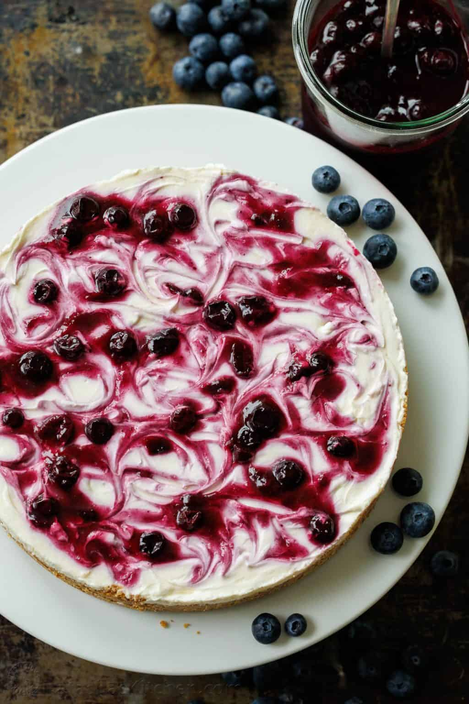

No Bake Blueberry Cheesecake

Description
This light and airy No-Bake Blueberry Cheesecake is one of our favorite summer
desserts because it’s easy to make and doesn’t require heating up your oven.
The texture is luxurious and it’s insanely delicious.
Ingredients
Crust
- 1 3/4 cups graham cracker crumbs, from 14 whole crackers
- 1 Tbsp granulated sugar
- 8 Tbsp unsalted butter, melted
Filling
- 16 oz cream cheese, 2, 8-oz blocks, room temperature
- 2/3 cup granulated sugar
- 2 Tbsp sour cream
- 2 Tbsp lemon juice, freshly squeezed
- 1 cup heavy whipping cream
- 1 recipe blueberry Topping (below), to serve
Blueberry Topping
- 1/3 cup water for fresh berries, use 1/4 cup for frozen berries
- 1 Tbsp freshly squeezed lemon juice
- 2 Tbsp granulated sugar
- 1 Tbsp Cornstarch
- 4 cups fresh or frozen blueberries, 16-18oz
Steps
To Make Blueberry Topping:
- In a medium saucepan, add water, lemon juice, sugar, and cornstarch. Use a spatula to stir
until the cornstarch is dissolved. Set over medium heat and continue stirring until the mixture
starts to thicken in about 1 minute.
- Add blueberries and bring to a boil, stirring occasionally and gently as they cook. When done,
the berries will release some of their juice and turn syrupy, which takes about 5 to 6 minutes.
Remove from the heat and set aside to cool to room temperature.
To Make No-Bake Cheesecake:
- In the bowl of a food processor, coarsely break up graham crackers then pulse into fine crumbs.
Transfer crumbs to a bowl, add 1 Tbsp sugar and 8 Tbsp melted butter. Stir to evenly moisten crumbs.
Line a 9-inch round springform pan with a round of parchment paper and press crumbs into the bottom
of the pan going 1/2" up the sides. Freeze for 15 minutes or refrigerate 30 minutes for crumbs to set.
- In a large mixing bowl, beat the cream cheese and sugar with an electric hand mixer on medium/high
speed for 3 minutes until fluffy and completely smooth, scraping down the bowl as needed. Add sour cream
and lemon juice and beat for another minute until well incorporated.
- Wash the mixer attachments and then in a second large mixing bowl, beat heavy whipping cream on
medium-high speed for about 3 minutes, or until whipped and stiff peaks form.
- Using a spatula, fold the whipped cream into the cream cheese mixture until fully combined,
scraping from the bottom of the bowl as you mix.
- Pour half of the filling over the cooled crust. Spoon 1/4 of the cooled blueberry sauce over the first
cream cheese layer and lightly swirl over the top.
- Pour on the remaining cheesecake mixture and smooth out the top. Spoon and swirl 1/4 of the blueberry
sauce over the top. Cover and refrigerate for 6 hours or overnight to fully set. To serve, top individual
slices of cheesecake with the remaining blueberry sauce.
Home